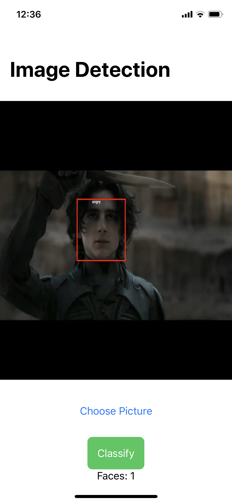
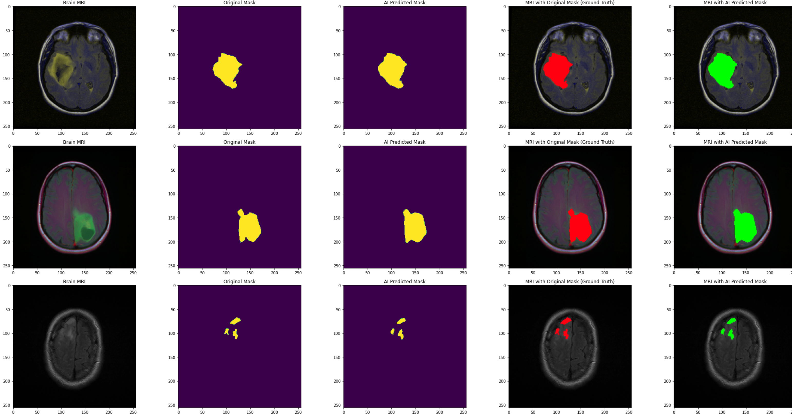
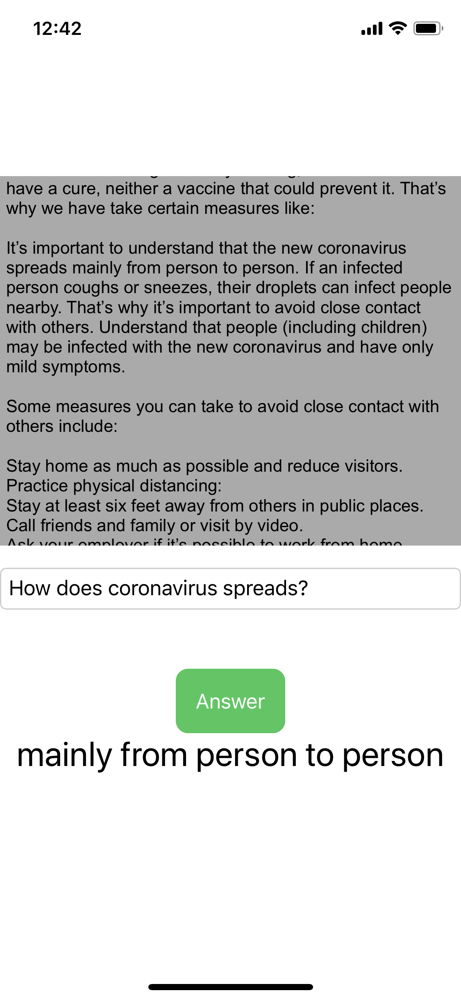
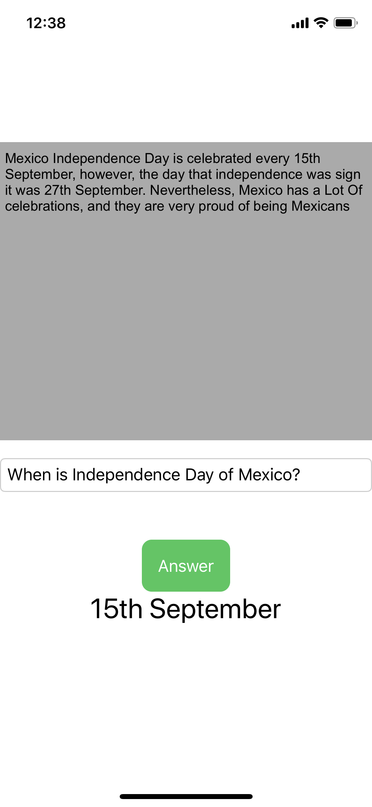
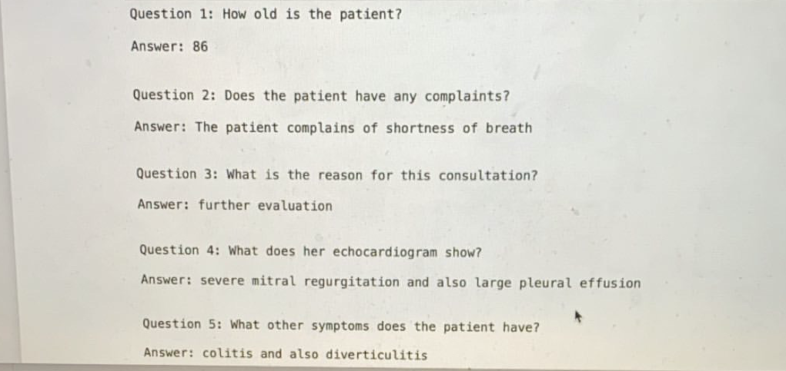
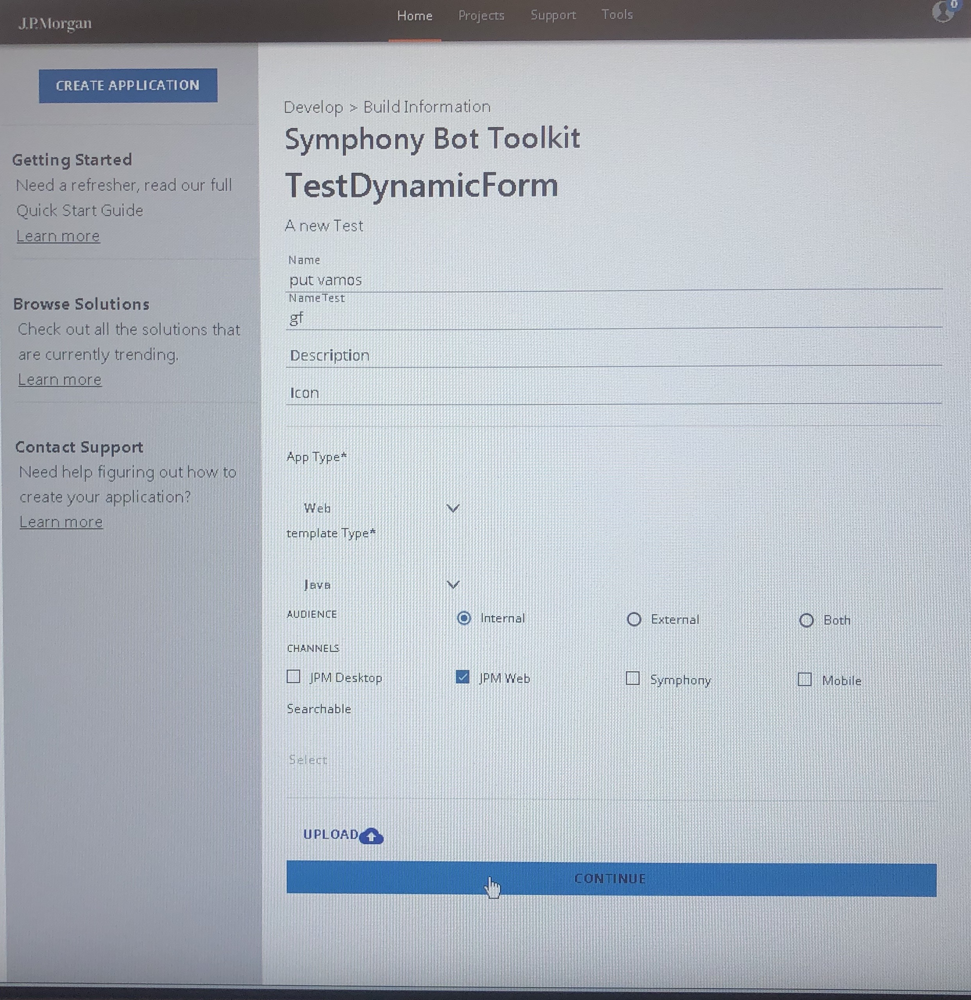

Projects
Here you will find some projects that Gustavo Mendez has developed; from Machine Learning, to FrontEnd and iOS/Android Apps:
Face and Emotion Recognition

An iOS app for photos and an Algorithm for Real Time Vide for Face and Emotion Recognition, in which it gives you the percentage of how many emotions you show, it also includes the time you spend at certain area, and between cameras it recognizes your face.
Brain Tumor and Covid-19 Classifier

A model for classify Brain Tumor with magnetic resonances, it classify the RMI between Edema, Non-enhancing Tumor and enhancing Tumor. On another hand it classifies the X-Ray from patients between covid-19, Viral pneumonia or Bacterial pneumonia

Diappetes

An iOS and Android app of Daily Care of Diabetes, with communication with the Doctor(the Dr. can prescribe medicines and select a diet), a reward plan, also has the options to buy medicines, have information about the disease, the diabetic can also input his food, and it has a discussion forum
Bert Healthcare

An iOS app and algorithm model using Bert for Question and Answer Healthcare and General Issues

Dynamic Form Package

A package for generating Dynamic Forms for react with Google UI Material. It is published in NPM